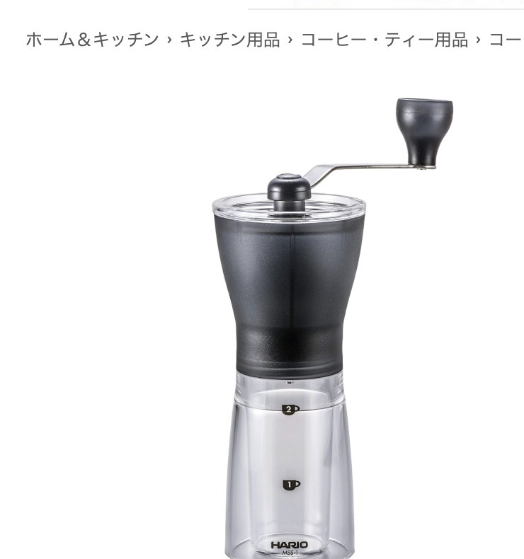
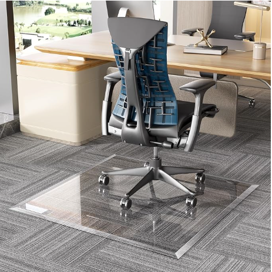
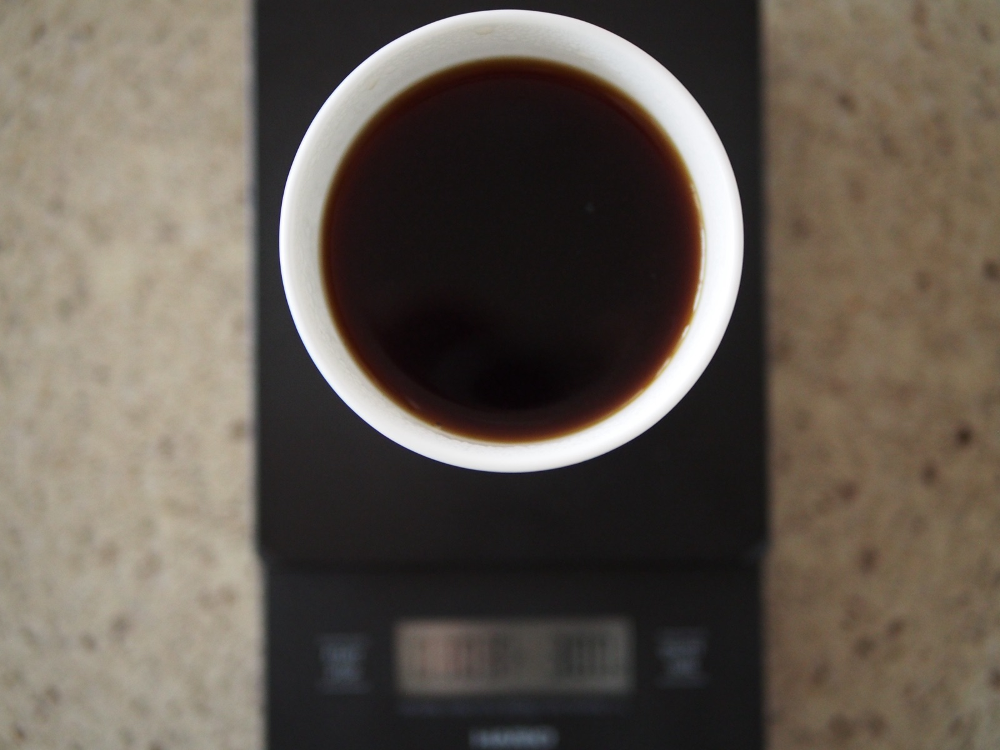

日々の道具の、覚え書き
日々つかっている道具や、選ぶときに気になったことを書いています。参考として、他の方のレビューも良い点・気になる点まで含めてまとめています。
Posts

刃の素材・調整方式・サイズで比べる、定番から本格志向まで5本。
対応機種と純正・互換の違いだけで、1本あたりのコストは9倍以上開く。
同じLAMYでも、カートリッジからボトルに変えるだけで1回あたりは5分の1近くまで下がる。
同じ4kg前後のパッケージでも、1回の使用量が違うだけでコストは3倍以上開く。

サイズよりも素材で価格・使い勝手が大きく変わる。PVC・布・フランネル・強化ガラスの4系統を比較。
形状ごとの手間と溶けやすさ、1回あたりのコストについて。

茶色と白の違い、ふたつのサイズ、紙を使わない選択肢について。